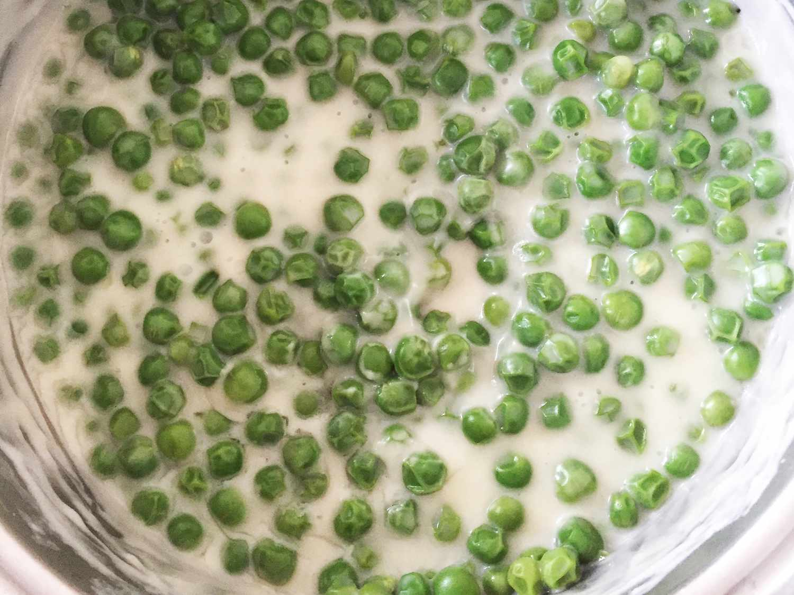

Cream peas

Cream peas recipe
Creamed peas make a great side dish.
Ingredients
- 2 cups frozen green peas, thawed
- ⅔ cup water
- ⅛ teaspoon salt
- 3 tablespoons butter
- ⅓ cup heavy cream
- 2 tablespoons all-purpose flour
- 1 tablespoon white sugar
Steps
- Combine peas, water, and salt in a medium saucepan. Bring to a boil, then stir in butter.
- Whisk together cream, flour, and sugar in a small bowl. Stir mixture into peas. Cook over medium-high heat until thick and bubbly, about 5 minutes.